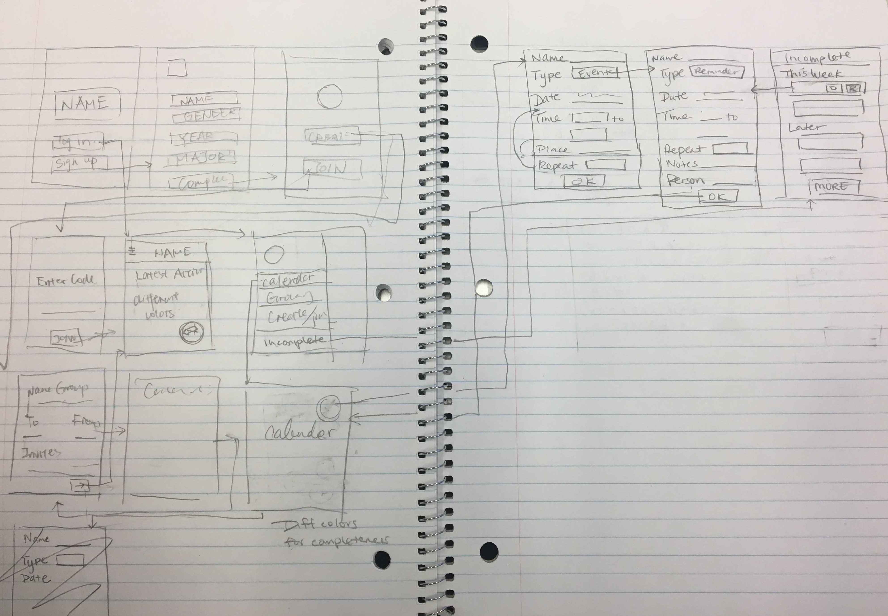
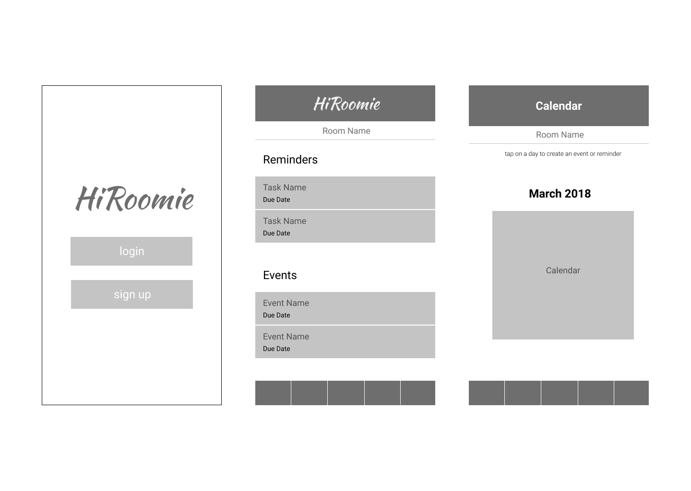
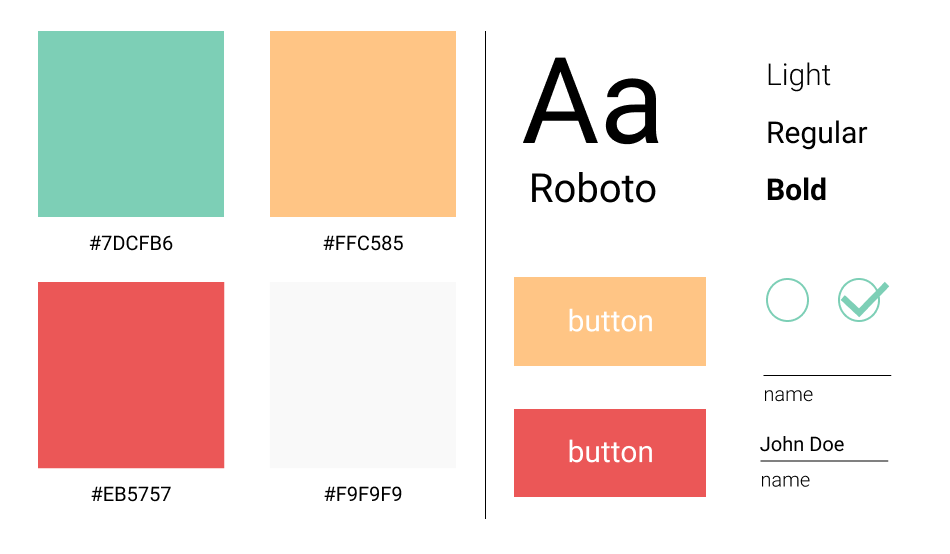
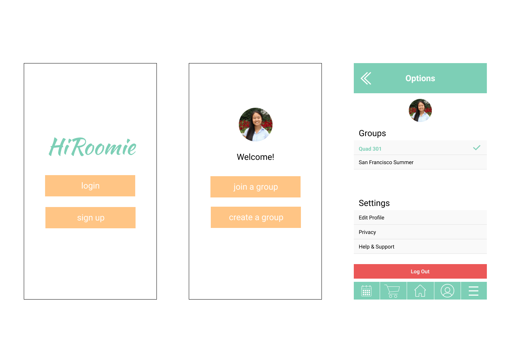
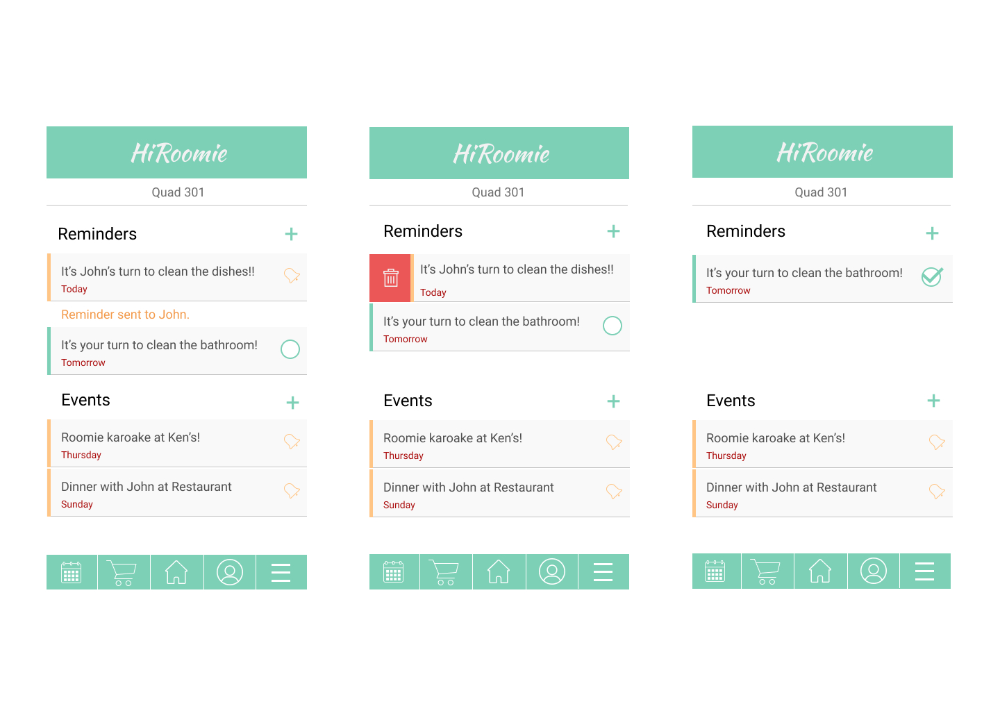
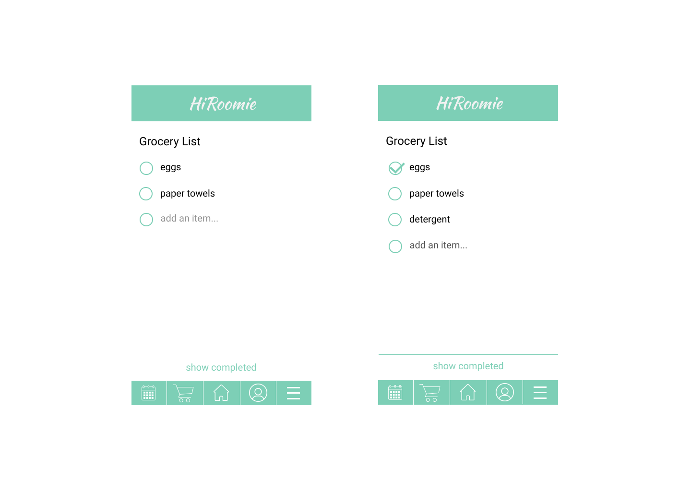

HiRoomie is a mobile app designed for college students that facilitates communication & collaboration between roommates.

HiRoomie is a mobile app designed for college students that facilitates communication & collaboration between roommates.
Creating HiRoomie was one of my first experiences working with UI/UX design. It is the product of a 6-week
design seminar and the frustrations that most college students feel at some point when living with someone
else.
Roommate issues are a common problem both on and off college campuses. These issues include:
It seemed that the root of most issues was often poor communication, so solving this problem became the focus of our application.



Multi-Group Feature: Users can switch, create, and join multiple groups at a time.
We realized in
our user research that students may live with different people in different residences throughout the year -
for example, I lived in a 4-person suite during the school year but lived in a 2-person apartment in San
Francisco during my internship.

Task List Feature: Users can view, add, delete, and send a reminder about roommate tasks and
upcoming events.
The remind feature was inspired by the same feature in Venmo, which helps reduce some of the awkwardness
associated around reminding friends to do something.

Grocery List Feature: Users can view, add, and check off grocery list items on a shared list.
